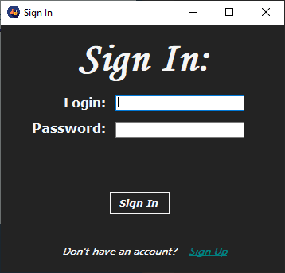

Справка пользователя по использованию приложения для работы с базой данных
"Компьютерный магазин Centurion"

Для чего это программа
Эта программа была разработана для работы с базой данных "Компьютерный магазин Centurion". Она предназначена для управления данной базой данных, а сама база данных, в свою очередь предназначена для облегчения ведения учета продажи техники в компьютерном магазине.
Как пользоваться
При помощи данного приложения вы можете просматривать содержимое БД, изменять и удалять информацию из неё. Есть возможность зайти в настройки и поменять тему приложения, следать отчеты а также распределить роли, сделать резервную копию БД и восстановить её из файла Бэкапа...
Вход
Регистрация
Просмотр, редактирование и удаление
Настройки
Отчеты
Администрирование
Распределение ролей
Обратите внимание на то, что не все функции доступны обычному пользователю. Так, например обычный пользователь не может изменять или вносить значения в БД или назначать роли пользователям, это могут делать только пользователи, чьи роли БД позволяют это делать.
Предусмотрены следующие роли:
- Пользователь
- Продавец
- Мэнеджер
- Администратор
Проблемы
В случае каких-либо неполадок, или ошибок, совершенных вами, обратитесь к вашему администратору. В противном случае, если ошибки более серьёзного характера, сообщите администратору, который в обязательном порядке свяжется с создателем БД, который сможет её решить. Вы также можето позвонить на горячую линию производителя, и мы постараемся вам помочь...
Также, если вы забыли пароль, вы можете его восстановить...
FeedBack
Разработчик: MicroBot industries©
Горячая линия: +(373)69982418
Наша почта: micro_bot@gmail.com
Адрес: str. Stefan the Great 22/8